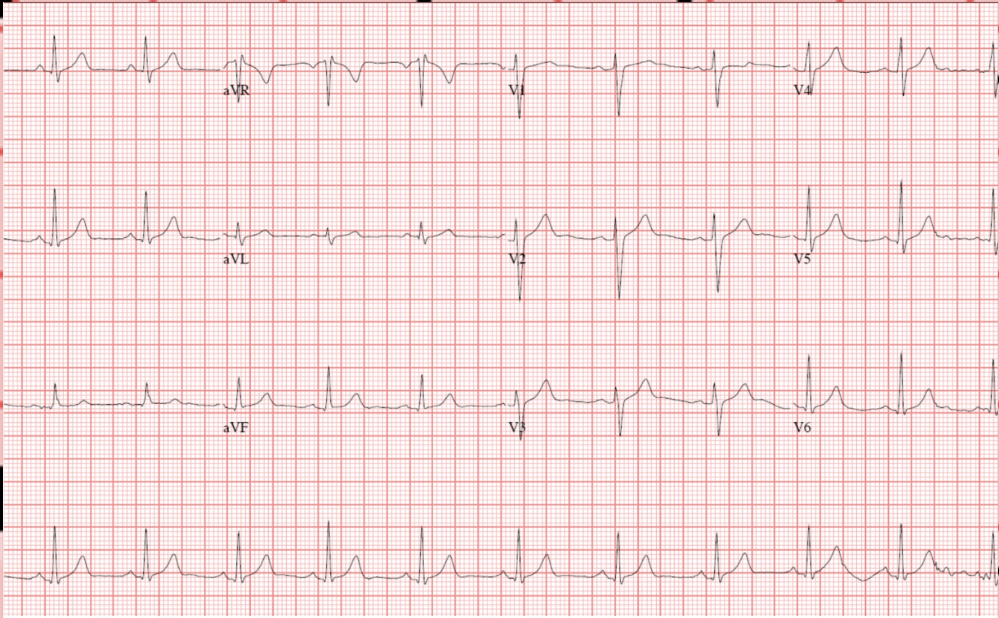

HPI
68-year-old male with known CHF (EF 35%) and COPD presenting with acute onset dyspnea over the past 6 hours. Patient reports worsening orthopnea and bilateral leg swelling over the past week. Denies fever, chest pain, or hemoptysis. Last hospitalization 3 months ago for CHF exacerbation. Adherence to furosemide uncertain per family.
Exam
Uncomfortable, sitting upright. SpO2 88% on room air. RR 26. HR 112. BP 158/94. JVD present. Bibasilar crackles on auscultation. 2+ pitting edema bilateral lower extremities. No wheeze. Abdomen soft, non-tender.
Assessment
Acute decompensated heart failure vs. COPD exacerbation vs. combined etiology. Disposition remains unclear pending labs and imaging. Consider ICU step-down if fails initial diuresis.
12-Lead ECG — Sinus Tachycardia

Interpretation
Sinus tachycardia at 112 bpm. Borderline prolonged QTc at 468 ms. No ST elevation or depression. LVH pattern. Non-specific T-wave changes in V4-V6. No acute ischemic changes.
Furosemide40 mg PO daily
Carvedilol12.5 mg PO BID
Lisinopril10 mg PO daily
Spironolactone25 mg PO daily
Tiotropium18 mcg inh daily
Aspirin81 mg PO daily
Atorvastatin40 mg PO nightly
Penicillin Reaction: rash · NKDA otherwise